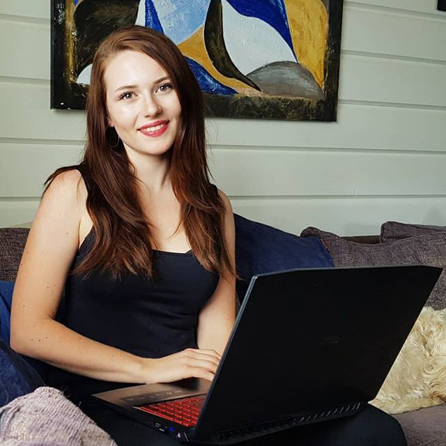

Computer Science Student Interview | Elisabeth Wade
Elisabeth Wade is a computer science student from Norway that’s currently studying abroad in Australia. No stranger to giving tips and advice to the dev community, Elisabeth has taken the time to give us some insight on her life and to share some more awesome tips!

I saw you just moved from Norway to study abroad in Australia for a semester. How’s that transition been like for you? First impressions?
Before I left I heard it was winter in Australia, but I still expected it to be quite warm here. I mean, most people think of Australia as this warm country with endless beaches and surfers, and I certainly did too! But it is actually quite cold here — not as cold as winter back home in Norway of course, but the fact that I only brought mostly summer/late spring apparel did not help me here, haha. I’ve been living in my hoodie ever since I arrived. The Gold Coast is warmer though, so if I moved according to temperature I think I would have chosen that area instead.
My first impressions of Australia is that Australians are really friendly and helpful. I also absolutely adore the Melbourne accent. Learning Australian slang is a whole new world as well, they have a tendency to shorten everything. McDonalds is “maccas”, breakfast is “brekkie”, and so on. Another great aspect is how multicultural Melbourne is. This means I can find great restaurants serving food from all over the world here. Perfect for a foodie like me! Norway does not offer the same variety as I’ve found here.
You’ve been sharing your coding journey on Instagram as well as YouTube. Was sharing your journey something you always wanted to do? Did content creation come natural to you? Any tips for those looking to start sharing their own coding journey?
To be honest, what I am doing now is completely different from what I usually do. I am not a person who likes social media both because of privacy concerns and how superficial it can be. However, I realized that the way to be a positive influence for others in the modern day is through social media, and that’s why I chose these platforms to inspire others.
When it comes to creating content, I have always loved to work with video and images. I am not a professional in any way, but I love doing that kind of creative work. By putting myself out on the internet I have also found that I have grown a lot, and improved a lot of my communication skills.
Some tips for people who are just starting out is to not be afraid of being themselves. They should try to document their journey and be real, because people like to follow a story, and being fake is easily seen through.
What drew you into game development? Are there any game studios in particular you’d like to be a part of some day?
I have always enjoyed playing video games from a young age. I grew up with video games and have always found a way to play them, even if it was a Nintendo Gamecube, Playstation or Xbox. When I got older I invested in a powerful desktop computer which allowed me to play all games on ultra settings, and also gave me the opportunity to play more games than in the past. In 2015 I started playing The Witcher 3, and somewhere along the way I realized that this is absolutely my favorite game. I thought to myself, someone actually sat down to code this and managed to create it. I decided to start my programming journey, hoping to some day work for CD PROJEKT RED, the studio behind The Witcher game series. After this I started reading all The Witcher books and playing the older Witcher games, but that’s a whole other story.
Any tips for those considering pursuing game development?
If you are in high school, make sure to take physics! I did not because I had more interest in other subjects, and now I’ve had to learn a lot of physics concepts, formulas and theory. There is a lot of physics (and maths) involved in game dev in order to make the sprites and environment act and look natural when interacting.
Also, go on Udemy to find a Unity or Unreal course. Those are really good for getting you started! I think Unity is more beginner friendly. These are engines you can create your game in, in which you don’t have to worry about the nitty gritty stuff. If you feel like building everything from scratch, I think using OpenGL or SFML would be a good starting point, maybe even a text-based adventure game! However, depends on what you want to make and how much programming vs. game design you want to do.
What’re some common misconceptions about majoring in computer science that you’ve found to be untrue?
I think a common misconception is that everyone taking CS is really geeky and knows everything about computers. But the truth is that there are so many people from different backgrounds that take CS, and a lot of them are starting from scratch.
Another misconception is that CS is just about coding, but it is in fact not! I’ve faced so many different subjects and topics already. Everything from ethics, psychology (related to game dev), design, mathematics, networks and communication, data and information, cultural aspects, etc.
I’ve heard if you love playing video games, programming them can make you love them a little less. Have you found any truth to this?
Personally I have a very different relationship to the games I play versus the games I work on. When I play other people’s video games I enjoy them, and really appreciate all the details, work and storylines they have put into the game. I think when you play a video game without knowing how much is behind it, you don’t really appreciate it as much.
However, playtesting your own game can be very painful especially when things don’t go as you want them to, and you have to recompile every few minutes.
I don’t play video games as much as I used to before I started uni because I am prioritizing my studies and have a strong work ethic. Work > play for me!
Do you plan on moving to the U.S. anytime in the future? If yes, which part and why? If no, where do you plan on going to next? (assuming you don’t decide to remain in Australia)
I do not think I will be moving to the US within the next 5–10 years. I don’t want to go too much into detail, but it has a lot to do with the political situation in the U.S. However, I want to travel as a tourist to explore. The lovely @sasha.codes lives in SF and I would love to meet her after doing all these livestreams together. (Go check out her profile — it’s amazing!)
The next place I will move to is back to Norway so I can finish the remaining 1.5 years of uni. I don’t know exactly where I will be going from there, but I know it’s probably going to be to a lot of different countries! Me and my partner’s plan is to live in a lot of different countries before we settle down in Norway when we’ve “seen enough”.
Bonus Points:
Who makes for a better pair programming partner, koalas or kangaroos?
Depends on whether you want to do all the work or get kicked in the face all the time!
Koalas sleep about 22 hours a day, and for the remaining 2 hours they will go looking for Eucalyptus to eat. I don’t think they will waste the calories (eucalyptus has a very low calorie-density, it’s basically just water) on coding!
Kangaroos on the other hand are known to randomly kick you. I mean, if you haven’t had enough pain from being stuck with a bug for 12 hours, then sure, invite the Kangaroo to give you some more.
Because Kangaroos have more energy, I’d pick them as a programming partner. However, I love koalas a lot (my favorite animal ❤).
Hidden talents?
I am a really fast typer. A lot of people point this out when they see me type. It is great for taking notes in class or writing down something important, but sometimes I can probably come off as a bit scary when I send long messages fast in a chat.

Current favorite video game? Game you’re looking forward to the most?
I’m really sad to announce that because I left my lovely baby back home (a.k.a. my desktop computer with great specs compared to this laptop), I don’t play video games anymore as of now! I tried launching some of the games I used to play on my laptop, but after you’re used to really good graphics, it sucks to step down to a lower quality. However my laptop is great for coding, I just did not invest a lot of money into a high-end gaming laptop as when I’m back in Norway I usually spend 90% of my time on my desktop anyways.
I am looking forward to Fallout 76, Cyberpunk 2077 and some other games. And I hope Witcher 4 will be released some day. üòâ
What’s next for you?!
I’m hoping to continue my life in this koala-country while doing my best in uni until December. After that I will return to Norway to finish my education. I don’t have any specific plans once I finish, but we’ll see! One year ago I could not predict that I would be in Australia typing this interview. So much can happen, and I am really excited for everything that is to come!
Anything else you’d like to add for the people reading this?
I am assuming that the people reading this are programmers or interested in tech. Therefore, I want to remind everyone that the greatest thing they can do right now is to take action on their goals and that they have unlimited potential to achieve anything as long as they put in the energy. You can build the next great app, website, tech or video game if you set your mind to it.
Thank you so much for this wonderful interview!
You can catch more of Elisabeth’s game development journey on her YouTube channel! Follow me on all major social media platforms @terrance_corley for more dev related content.